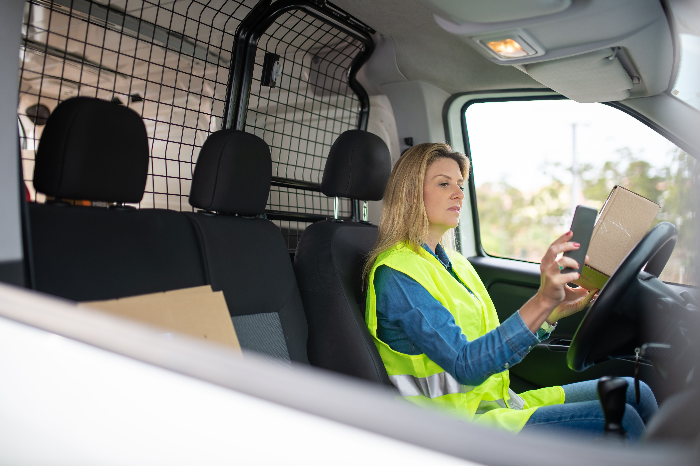
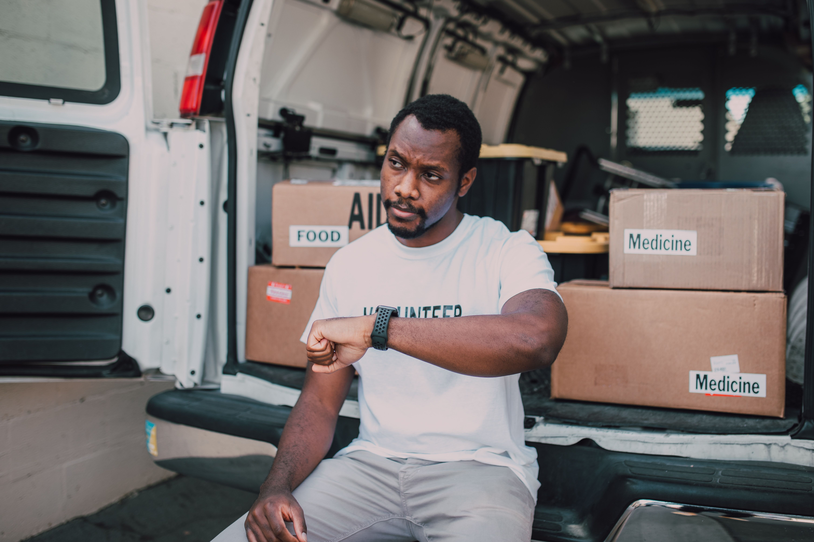

Zero tailpipe emissions
People-powered deliveries that leave exhaust fumes out of the equation.
YOUR NEIGHBORHOOD. DELIVERED BETTER.
Small parcels. Big difference. We connect local businesses and neighbors with reliable bicycle delivery that’s kinder to the city we call home.
YOUR NEXT DELIVERY STARTS HERE
A quick estimate. A greener journey.
Sample prices · No booking or payment
3-mile route. Addresses are not geocoded. maximum: 20 kg, 60 × 40 × 40 cm; availability and handling must be confirmed.
SMALLER FOOTPRINT. BIGGER IMPACT.
Not every delivery needs an engine. Our bicycles take the small things that matter across town, without the tailpipe emissions, parking problems, or extra congestion.
Meet your new delivery rhythmPeople-powered deliveries that leave exhaust fumes out of the equation.
Smaller vehicles, thoughtfully planned routes, and easier doorstep access.
Couriers who know the neighborhoods and treat each parcel with care.
WHAT WE DELIVER
For the everyday essentials
From your doorstep to theirs. Thoughtfully handled local parcels, delivered within your selected window.
Request this serviceFor the local favorites
Meals from neighborhood kitchens, with insulated bags and direct routes that keep handoffs simple.
Request this serviceFor your working day
A dependable delivery partner for busy offices, independent businesses, and everyday operations.
Request this serviceFor the important details
Contracts, samples, and important paperwork transported directly, with a clear handoff record.
Request this serviceFor the neighborhood makers
Bring your shop to your customers. Flowers, gifts, and retail orders delivered with a personal touch.
Request this serviceFor a smoother routine
Plan ahead with recurring pickups and thoughtfully grouped routes that fit your business rhythm.
Request this serviceFROM A TO B, SIMPLY
You focus on your day.
We’ll focus on the journey.
Tell us what’s moving, where it’s going, and when you need it.
A suitable bicycle or cargo bike is assigned to your delivery.
See pickup, progress, and estimated arrival in one place.
A clear handoff and completion record close the loop.
BUILT FOR THE CITY
Busy streets. Small storefronts. Doorsteps just around the corner. Our compact bikes fit the places where your customers live and work.
YOUR BUSINESS. OUR BICYCLES.
From a lunch order to a last-minute contract, make delivery a seamless part of your day. Flexible pickups, recurring routes, and a lighter footprint for your business.
Explore business accountsFrom your kitchen to table.
Fresh finds, delivered.
Keep your workday flowing.
A local last mile for online orders.
CLARITY, EVERY STEP OF THE WAY
A clear delivery timeline, courier details, and an arrival estimate help you keep your customers in the loop.
Delivery stages · Not live trackingTry the stages to explore a sample journey. Courier coordinates, notifications, and live ETAs require a connected tracking service.
Keep the collection and recipient contacts available while the parcel is moving.
Agree on the recipient or a suitable delivery location before departure.
Courier assigned.
CLOSER THAN YOU THINK
Local delivery neighborhoods.
Check a sample neighborhood below.
hours: Mon–Sat, 9 am–6 pm. Delivery windows depend on route, capacity, and service level.
Local shops, studios & doorstep drops.
Sample window · 1–3 hoursNeighborhood favorites, delivered locally.
Sample window · 1–3 hoursScheduled routes, subject to availability.
Sample window · 3–5 hoursGrowing thoughtfully, block by block.Ask about a new delivery area.
GOOD DELIVERIES. GOOD NEIGHBORS.
“Our flowers deserve a thoughtful final mile. The delivery feels as personal as the bouquet itself.”

“A simple pickup routine helps us focus on the lunch rush. It’s a natural fit for a kitchen.”

“Our local orders should stay local. Bicycle delivery makes that last step feel connected to our values.”
THE DIFFERENCE IS IN THE JOURNEY
A smaller delivery vehicle can make a meaningful difference to the streets we share.
From people-powered bicycle trips.
No combustion engine at the curb.
Less vehicle space. More room for people.
Bicycle operations still have a lifecycle footprint. No quantified carbon savings are claimed here.
LET’S MOVE SOMETHING GOOD
Across town. Around the corner. One thoughtful journey at a time.